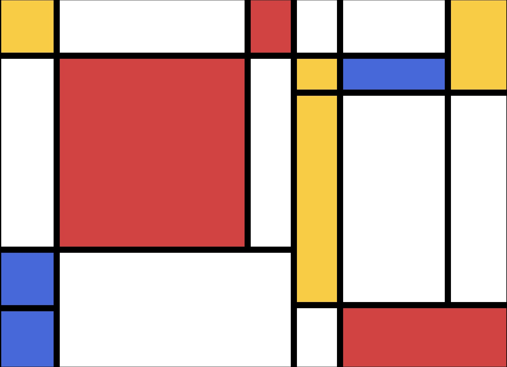
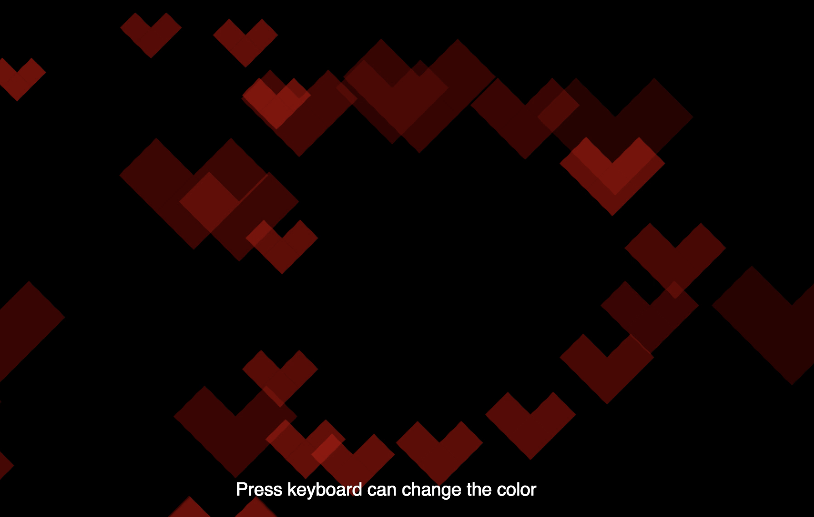
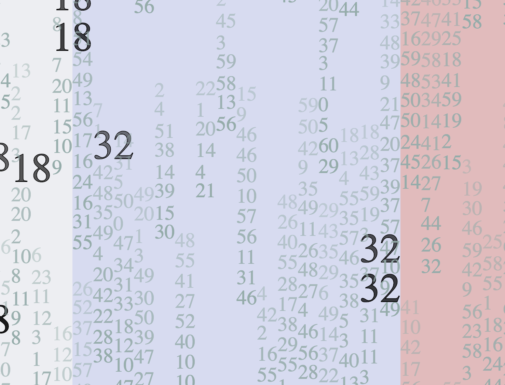
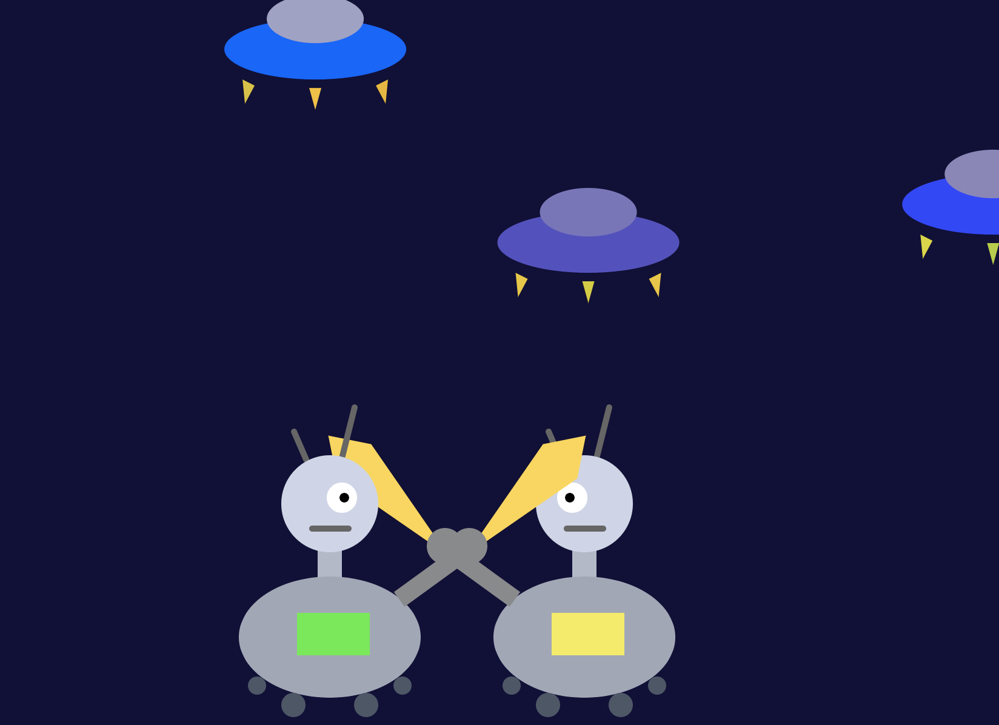
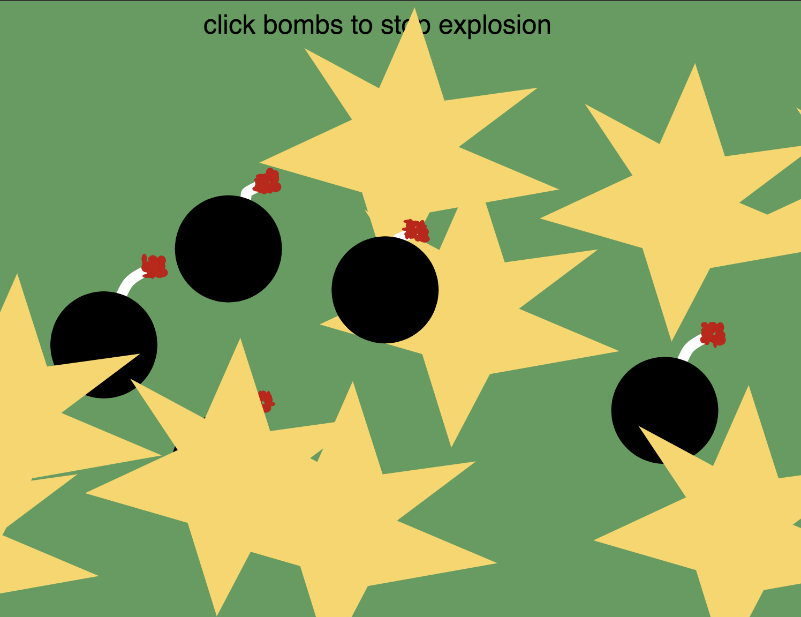
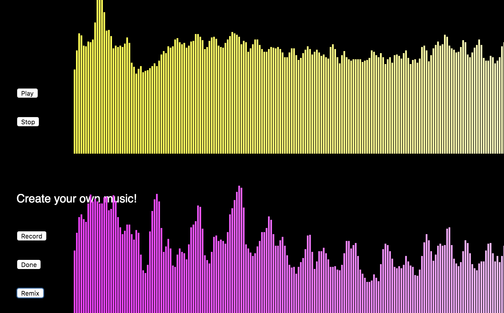
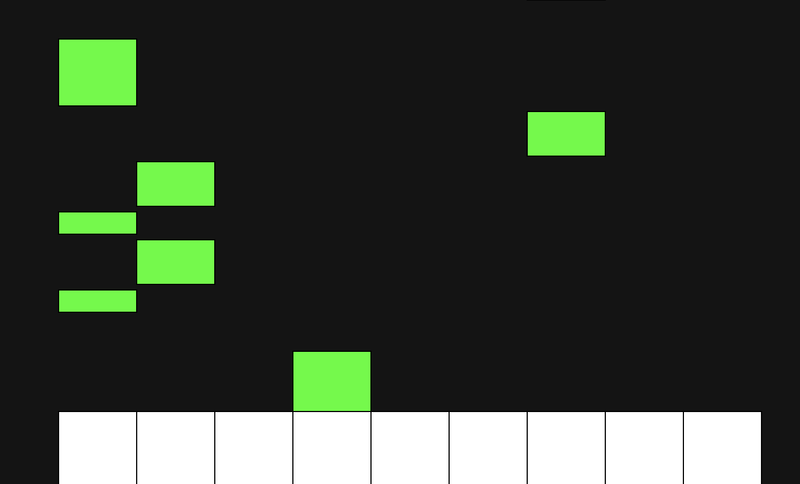
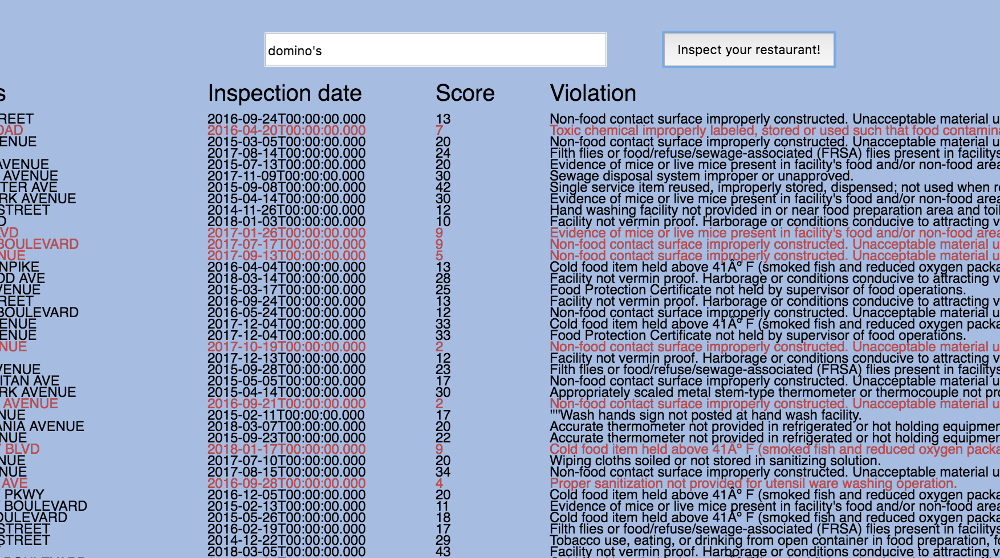
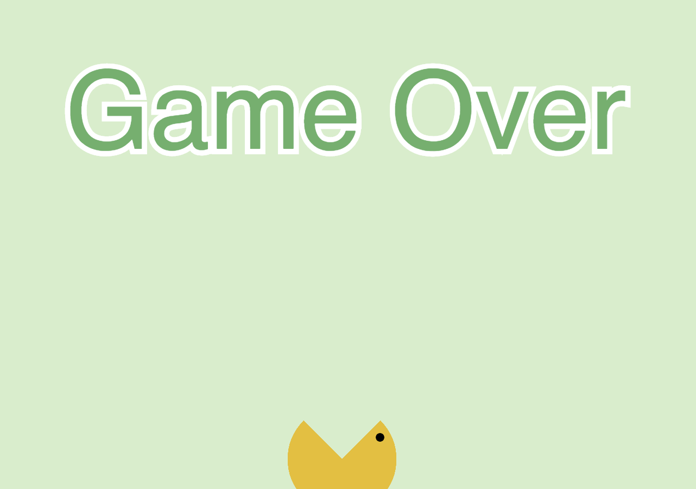

1. Drawing in p5.js (1)
Re-create an Mondrian.
2. Drawing in p5.js (2)
Re-create the flag of Saint Kitts and Nevis.

3. Interactivity Drawing Tool
Create a drawing tool with some variable parameter that changes as the user draws.

4. Animation
Create a readable clock that visualizes the time.

5. Repetition with Variation
Create an animation that uses functions,loops and transfomations to make a repeating pattern with variations.

6. Objects, Arrays and Particle Systems
Create a system with multiple instances of a custom object.

7. Using p5.Sound
Create a video to visualize sound.

8. Making Music in p5.Sound
Make an audio-visual instrument.

9. Working with Data
Create a data visualization, data exploration tool or data-based artwork.

10. Game
Create a single or 2-player game.